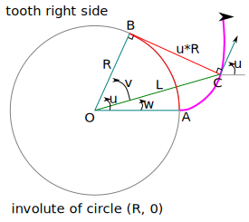
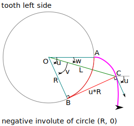
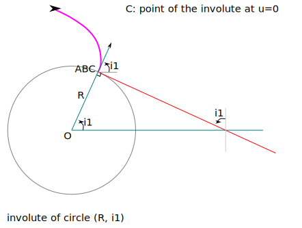
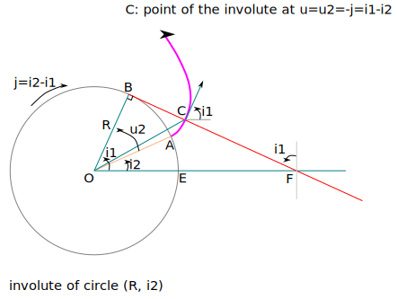
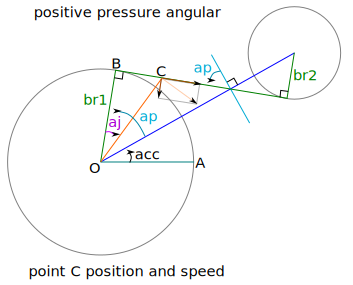
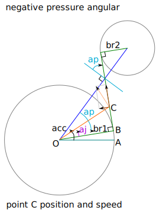
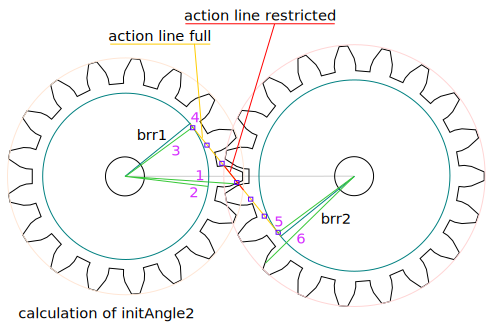
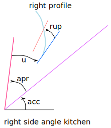
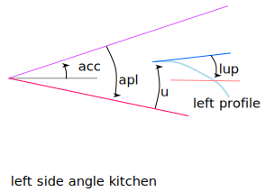

Involute of circle
Definition of an involute of circle
An involute of circle is the curve drawn by the extremity of a string rolled out from a base circle. The shape of an involute depends only on the size of the base circle (i.e. its radius). An involute of circle is completely defined with the radius of the base circle and the angle of the start position.
 
OB=R
BC=arc(BA)=u*R
L=OC=sqrt(R**2+(u*R)**2)=R*sqrt(1+u**2)
u=v+w
v=atan(u*R/R)=atan(u) if u<PI/2
w=u-v=u-atan(u)
u=sqrt((L/R)**2-1)
u=f(w)? [I don't know how to calculate analytically u from w]So we can calculate directly (with a formula):
- With u, we get L and w
- With L, we get u and then w
- With w, we can not get u directly. We can only approximate it iteratively
The curve of the involute of circle can be described with polar coordinates as a parametric function:
u -> [L: R*sqrt(1+u**2), w: u-atan(u)]Properties of an involute of circle
 
if we choose u2=-j=i1-i2, then
- C is on BF
- BC = R*u2 = -j*R = R*i1-R*i2
- dBC/dt = -R*di2/dt = R*dj/dt
- inclination of tangent in C = i1For any initial angle i1 of an involute of circle, we construct the line called line of action or line of pressure going through B, the first point of the involute at the initial position i1 and the angle of inclination i1 - PI / 2. With those definitions we have those results:
- The angle of inclination of the tangent of B is i1
- For any rotation of angle j, it exists a point C at the intersection of the involute and the line of action
- The angle of inclination of the tangent of C is i1
- The distance BC is R*j
Conclusion, if we have a plan with an inclination angle i3, it will be pushed by an involute of circle with initial angle i3. The pressure of the involute on the plan is always along the line of inclination angle i3 - PI / 2. This line is called line of pressure or line of action. If the base circle of the involute rotates at a constanst angular speed J, then the plan is pushed at the linear speed RJ with R the radius of the base circle.
Contact point
The position and instant speed of the contact point C of an involute of circle with the virtual plan perpendicular to the line of action.
 
Speed ratio
If the first base circle rotates at the angular speed J1, the point of contact C moves at the linear speed VC = J1*br1. We also have VC = J2*br2. The counter gearwheel rotates then at the angular speed J2 = VC/br2 = J1*br1/br2. So the angular speed ratio is the inverse ratio of the radius of the base circles.
In order to switch smoothly from one tooth to an other, this ratio must also be equal to N1/N2.
Finaly we have J2/J1 = br1/br2 = N1/N2.
Calculation of initAngle2

Recipe to calculate the initAngle2 for the right side:
- Starting from initAngle1, the angle position of the primary point of the first tooth
- substract the angle W-primary-1 to get the starting of the involute of circle
- In a loop, substract the tooth angle period to get the first angle aBP for start of involute of circle
- Compute the length lBD of the action line
- Compute the length on the action line between two contact points:
2*PI/N1*brr1 = 2*PI/N2*brr2 - Get the first start of involute of circle in the second gearwheel coordinate
lBD-aBP*brr1 - Get the first start of involute of circle of the second gearwheel
- Get the angle position of the primary point initAngle2 of the arbitrary first tooth of the second gearwheel by adding the angle W-primary-2
Angle kitchen
 